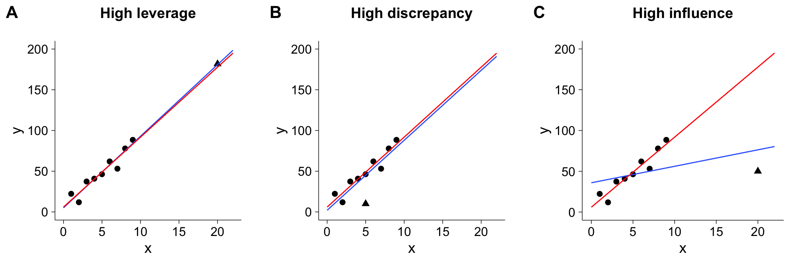
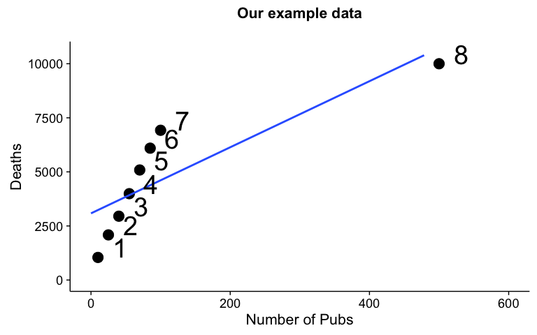
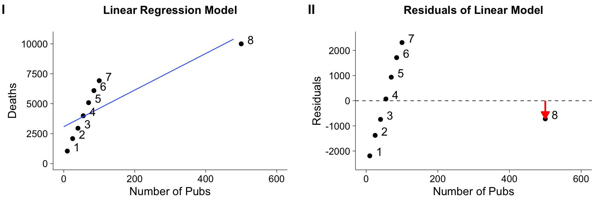
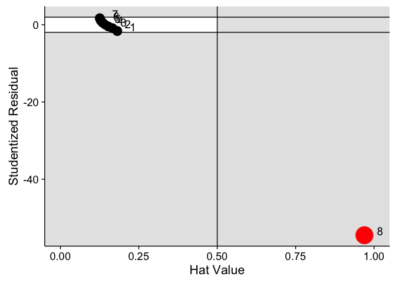
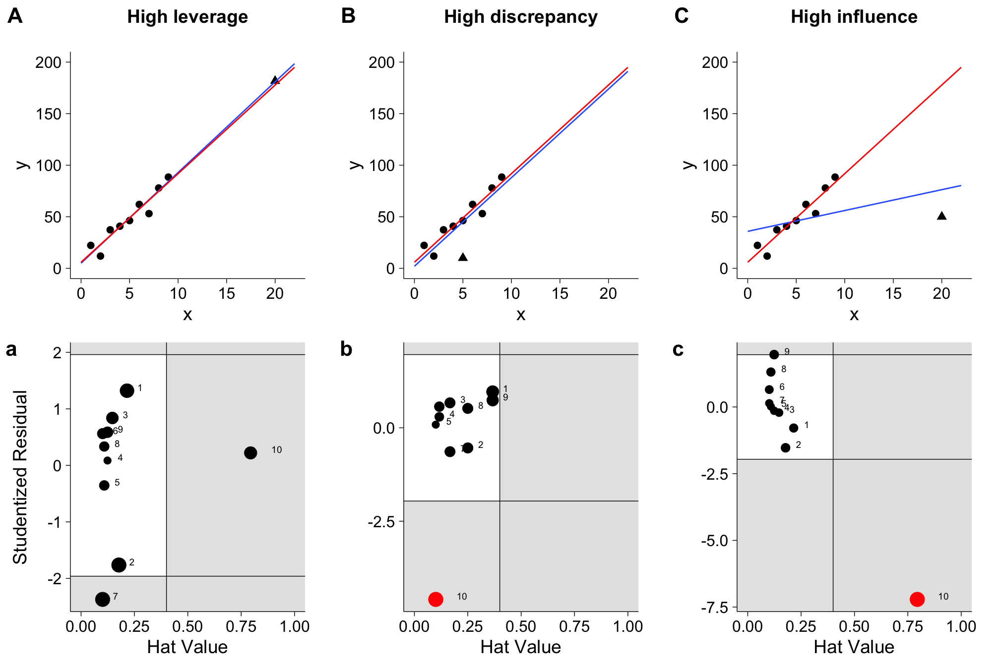

With experimental data, you commonly have to deal with "outliers", that is, data points that behave differently than the rest of the data for some reason. These outliers can influence the analysis and thus the interpretation of the data. In this blog post, we will look at these outliers and what exactly they are, and how they can influence data analysis and interpretation. Using simple linear regression as an example, we will go through some cases where individual data points influence the model significantly, and use R to identify them.
Leverage, discrepancy and influence
Some observations do not fit the model well—these are called outliers. Other observations change the fit of the model in a substantive manner—these are called influential observations. A point can be none, one or both of these. A leverage point is unusual in the predictor space—it has the potential to influence the fit. (Faraway, 2005)
While a lot of researchers talk about outliers in a very general way, there are actually different types of unusual data points, and only one is "officially" termed an outlier. A data point can be unusual in its predictor behavior (in simple regression, the \(x\)-value), its outcome (in simple regression, the \(y\)-value), or both.
A point that is highly different in its predictor behavior than the rest of the data is a leverage point. In the case of a simple linear regression, that means that its \(x\)-value is either much higher or lower than the mean of the predictor.
If a point has an unusual \(y\)-value given its \(x\)-value, it has high discrepancy. This is what is called a outlier within the regression framework.
Neither of these feature necessarily makes a data point influence a linear model. In fact, the influence of a single data point is defined as its leverage \(\times\) its discrepancy. This means that simply having high leverage or high discrepancy is not always enough to change model parameters.
The figure below illustrate these three characteristics. In each of the three panels,the red line shows the line of best fit without the point in question (marked by the triangle), while the blue line shows the line of best fit with it. In panel A, the the data point with the triangle has a high leverage - its \(x\)-value is much higher than the rests. In panel B, it has a high discrepancy - it lies pretty far away from the line of best fit. However, neither of these points exert a lot of influence on our model parameters, as the red line does not diverge a lot from the blue line. In panel C, we see a point that has both high leverage and high discrepancy, and as a result, high influence: The blue line is very different than the red line.

While plotting data can give you an idea on which points are influential and is highly recommended, it might become a little unfeasible with a larger sample size. Different measures exist to assess each of these three values, and I will go through them one by one using a very basic example.
Our example data
In this tutorial, we will use a data set based on an example in Field, Miles, and Field (2012). The data set consists of eight samples. Our \(x\)-value, the predictor, is the number of pubs within a borough (district) of London, and our \(y\)-value, the number of deaths in that borough over a certain period of time. We are interested in how the number of deaths are related to the number of pubs in each boroughs, which means we'll use a simple linear regression with one predictor as our model.
Let's take a quick peak at the data:
pubs
## pubs deaths name
## 1 10 1043.822 1
## 2 25 2086.934 2
## 3 40 2951.086 3
## 4 55 3992.459 4
## 5 70 5088.003 5
## 6 85 6095.645 6
## 7 100 6923.497 7
## 8 500 10000.000 8
And plot the line of best fit:

Both from the raw data and the plot of the linear regression, it's obvious that one data point, point 8, is quite different than the rest. Not only is the number of pubs much higher than the rest, but the number of deaths seems to be in a different relation than in each of the other boroughs. Interesting!
Now that we already have some suspicion about this particular data point, let's see if this point has a) leverage b) discrepancy and c) influence.
Assessing leverage
Remember that leverage measures how far a predictor value is different to the rest of the predictor values. In simple linear regression, we can simply measure the distance to the mean of the predictor (\(\bar{X}\)) for each individual predictor point (\(X_i\)). A standardized version of this distance is called hat-value and denoted by \(h_i\) (for \(i = \{1 \ldots n\}\)):
The average hat value is defined as \(\frac{p+1}{n}\), in which \(p\) is the number of predictors and \(n\) the number of participants/cases. Values of \(h\) are bound between \(1/n\) and 1, with 1 denoting highest leverage (highest distance from mean).
By looking at our example data, you should immediately guess that point 8 has the highest leverage of all points. Let's use the above formula to calculate \(h_8\):
# number of cases
n = nrow(pubs)
# distance to mean of point 8
numerator = (pubs$pubs[8] - mean(pubs$pubs))**2
# distance to mean of all the other points
denominator = sum((pubs$pubs - mean(pubs$pubs))**2)
# putting it together
h_8 = 1/n+numerator/denominator
h_8
## [1] 0.969302
The resulting hat-value is 0.969302. That is quite high - in fact, it's very close to 1, the highest possible value! Luckily, you don't have to calculate all hat-values by hand, as R provides a convenient hatvalues function that can be called on any linear model. To let R do its magic, let's first fit a simple linear model by calling lm, and then extracting the hat-values:
# fitting linear model
mod.pubs = lm(deaths~pubs, data=pubs)
# getting hatvalues and printing them
hs = hatvalues(mod.pubs)
as.numeric(hs)
## [1] 0.1813863 0.1658284 0.1527766 0.1422307 0.1341907 0.1286567 0.1256287
## [8] 0.9693020
Luckily, our by-hand calculation matches the value R provides for data point 8. You can also see that all other hat-values are relatively close to 0. Remember that leverage alone does not mean a point exerts high influence, but it certainly means it's worth investigating. Hat values are open to interpretation, but a cut-off value that is common is twice the average \(\bar{h}\), meaning anything above that value should be looked at closer. In this case, \(h_8\) is definitely unusual!
After having assessed leverage, let's look at discrepancy. How unusual is the \(y\)-value given its \(x\)-value?
Assessing discrepancy
As explained above, points that do not have a good fit to the linear regression line are considered outliers or are points with high discrepancy. To measure the fit, normally we look at residuals which measures how close a predicted value is to the actual value. We already now that point 8 has high leverage, but the line of best fit is actually pretty close to its predicted value (see below, panel I). By simply looking at the residuals (panel II), point 8 is not further away that other points. Of course, if you plotted the residuals, you should still notice something is off. For example, they are not normally distributed.

Instead, we can look at studentized residuals. Studentized residuals are calculated by fitting a model without the case for which the residual is calculated, and then scaling the resulting residual (\(E_i\)) by an estimate of the standard deviation of the residuals (\(S_{E(-i)}\)) and the point's hat value (\(h_i\)):
Let's calculate the studentized residual for our test data by hand. Remember that in this case, the 8th data point is the one we're interested in:
# model excluding point 8
mod.pubs.red = lm(y~x, data=pubs[-8,])
# residual for data point in original model
Ei = as.numeric(residuals(mod.pubs)[8])
# estimate of sigma (standard deviation) for residuals
S_E = summary(mod.pubs.red)$sigma
# hatvalue for point 8
hi = as.numeric(hatvalues(mod.pubs)[8])
# putting it together
Estar = Ei/(S_E*sqrt(1-hi))
Estar
## [1] -2.447433
Of course, you can also just let R do the maths by calling rstudent on the original model:
stud.res = rstudent(mod.pubs)
as.numeric(stud.res)
## [1] -1.6276530 -0.8807533 -0.4470375 0.0407595 0.5634649 1.1148286
## [7] 1.6812726 -54.5283362
Note that the last value is the same as the one we calculated by hand! Let's compare the residuals and the studentized residuals in plots side by side:
The studentized residuals reveal clearly that point 8 has a high discrepancy, while this was not possible to see from the normal residual plots.
Because studentized residuals follow a \(t\)-distribution, we could apply significance tests or simply look at values that exceed the 95% confidence interval, that is, values that are not between \(-1.96\) and \(+1.96\). In our example, our curious data point is clearly beyond that 95% confidence interval. However, keep in mind that just because a value is beyond those cut-offs, doesn't mean it's necessarily a bad data point.
You might also come across something called standardized residuals. These are simply divided by the standard deviation, and do not follow a \(t\)-distribution and thus aren't quite as useful.
Assessing influence
We have now seen measures for both assessing leverage and discrepancy, but we know that this doesn't necessarily translate into having high influence (however, you should still examine cases with high leverage and discrepancy). As our data point of interest has both high leverage and discrepancy, it should also have high influence. We'll use something called DFFITS which relies on the studentized residuals to assess influence. A similar measure is Cook's \(d\), which instead is based on standardized residuals. Another measure we won't go into are DFBETAS, which measures the influence on each individual parameter, instead of the overall model.
DFFITS measures the difference between the predicted values for model with and model without that case (for all cases and all parameters). If a case is not influential, its DFFITS value is close to zero. If it is influential, the change in predicted value (\(\hat{y}\)) is high. We can calculate DFFITS for a point by scaling its studentized residual by its hat value:
Thus, DFFit combines both leverage and discrepancy, and gives you a measure of influence. A common cutoff for DFFITS values is \(|DFFITS_i| > 2 \sqrt{\frac{k+1}{n-k-1}}\).
As the formula for DFFITS is rather easy, we won't go through the trouble of calculating it by hand. Rather, we can just call the dffits function in R:
as.numeric(dffits(mod.pubs))
## [1] -0.76616892 -0.39269568 -0.18983374 0.01659741 0.22182831
## [6] 0.42838046 0.63728625 -306.40556939
The last value, for point 8, is very large! Unsurprisingly, having a large discrepancy and leverage value resulted in a large influence value too.
Putting it all together: Influence plots
While I've mentioned common cut-off values for all the measures, bear in mind that you should never blindly rely on these, but rather take into account all three measures we talked about and the overall nature of the data. In our example, data point 8 exerts quite a high influence, but does that mean we should exclude it from our model? It turns out that the borough this point represents is the City of London, a small borough with many of commuters. These commuters like to have to drink after work, which explains the large number of pubs. However, as there aren't as many residents, the number of deaths is not much larger than in the other boroughs. This means we shouldn't necessarily simply exclude it from our data, but look for explanations for why this case is different than the rest (common: typos!).
To look at all three measures at the same time, I recommend plotting the hat-values against the studentized residuals. The size of each point represents \(DFFITS_i\). The resulting plot for the linear model applied to our example data is below. Hat-values are shown on the \(x\)-axis, and the cut-off of the hat-values is shown by the vertical line. Points to the right of this (in the shaded area) can be considered worthy of investigation. The \(y\)-axis shows the studentized residuals, and horizontal lines denote the 95% confidence interval. Again, points in the shaded area are worthy of being investigated. The size of each points represents that values DFFITS value, with values over the cutoff marked in red.

We can see that most points are in the white area, meaning that they do not show any concern. However, point 8 is different for all three values - something we've already discovered.
While I wrote my own function in R using ggplot, you can also use the influencePlot function in the car package and call it on your regression model directly. However, this version shows Cook's \(d\) instead of DFFIT in the point size, but the interpretation remains the same. The function also spews out noteworthy points as well as their influence metrics.
library(car)
influencePlot(mod.pubs)
## StudRes Hat CookD
## 8 -54.52834 0.969302 94.56717
Let's revisit our three plots from the beginning, which showed high leverage, high discrepancy and high influence respectively. How would influence plots look like for these data?

I hope you can make sense of these plots after reading this tutorial and identify the points. And again, bear in mind that especially for low sample data, the cut-offs are only a recommendation, and not justification to delete data points.
There's plenty more to model diagnostics than I have gone over in this tutorial, but hopefully you have a better understanding of influential data points and the relationship between leverage and discrepancy. Using the example data, you should be able to walk through the steps in this tutorial, and then apply the methods to your own data! If you'd like to know more, an excellent resource is John Fox's website on regression diagnostics, as well as the two books linked below.
References
[1] J. J. Faraway. Linear Models with R. Boca Raton: Taylor and Francis, 2005.
[2] A. Field, J. Miles and Z. Field. Discovering Statistics Using R. London and Thousand Oaks, CA: Sage, 2012.